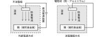

2023年
問題119 給湯設備に関する次の記述のうち，最も不適当なものはどれか．
（1）密閉式膨張水槽を設ける場合には，逃し弁も設ける．
（2）加熱装置から逃し管を立ち上げる場合は，水を供給する高置水槽の水面よりも高く立ち上げる．
（3）給湯量を均等に循環させるため，返湯管に定流量弁を設ける．
（4）SUS444の貯湯槽は，腐食を防止するために電気防食を施す．
（5）配管内の空気や水が容易に抜けるように，凹凸配管とはしない．
2023年
問題119 正解（4） 頻出度AAA
フェライト系※ステンレス鋼のSUS444は，対応力性，耐孔食性，耐隙間腐食性がオーステナイト系※のSUS304に比較して優れているが，電気防食によって発生する水素による水素脆性割れを生ずることがあるので電気防食を施してはならない．
※ フェライト系，オーステナイト系：ステンレス鋼の特性をもたらす鋼の結晶の相の種類．
代表的な電気防食には，流電陽極式電気防食と外部電源式電気防食がある（2023-119-1図参照）．

流電陽極式電気防食では，配管に，配管の鋼よりも化学的に卑な（イオン化傾向が大きい＝腐食しやすい）金属，マグネシウムやアルミニウムを犠牲陽極として接続しておくと鋼の代わりに腐食され，鋼は防食される．
貯湯槽などに流電陽極式電気防食が施されている場合には，性能検査の際に犠牲陽極の状態などを調査し，必要に応じて補修，交換する．
外部電源式電気防食は，不溶性電極（白金めっきを施したチタン線や炭素電極等）を陽極とし，外部電源（低圧直流電源）を用いて防食対象を保護する方法．電極の取り替えが不要（長寿命）であるが，電流密度の調整や定期的な保守が必要となる．
-(1) 密閉式膨張水槽は労働安全衛生法に基づく安全装置に該当しないので，密閉式膨張水槽を設ける場合には，逃し弁も設けなければならない．
加熱による水の膨張量は，密閉式膨張水槽の空気を圧縮して水槽内に吸収される．湯が逃し弁から吹出すのを避けるために，逃し弁の圧力設定値を膨張水槽にかかる給水圧力よりも高く設定する（ただし，逃し弁の圧力設定値は最高使用圧力の110％を超えてはならない）．2023-119-2図参照．
-(2) 温度によって比重の違う「逃し管の湯」（わずかに軽い）と「補給水管の水」（わずかに重い）を重量的にバランスさせ，逃し管から湯が流れ出ないようにするために，逃し管は補給水槽の水面より高く立ち上げる（2023-119-3図参照）．
立上げ高さは次式によって求めることができる．
\[ h \gt \frac{\rho_c}{\rho_h} \times H \]
-(3) 給湯量を均等に循環させるのは，給湯管全体の湯の温度を保つためである．定流量弁を給湯管に取り付けたりすると，ピーク時に給湯量が間に合わない系統が出てくる危険がある．定流量弁や流量調整の弁は返湯管に設ける．
-(5) 凸凹配管の凹部には泥だまりができて衛生上の問題になる．凸部には空気だまりができて円滑な給湯を妨げたり，放流の際に水が抜けにくくなる．